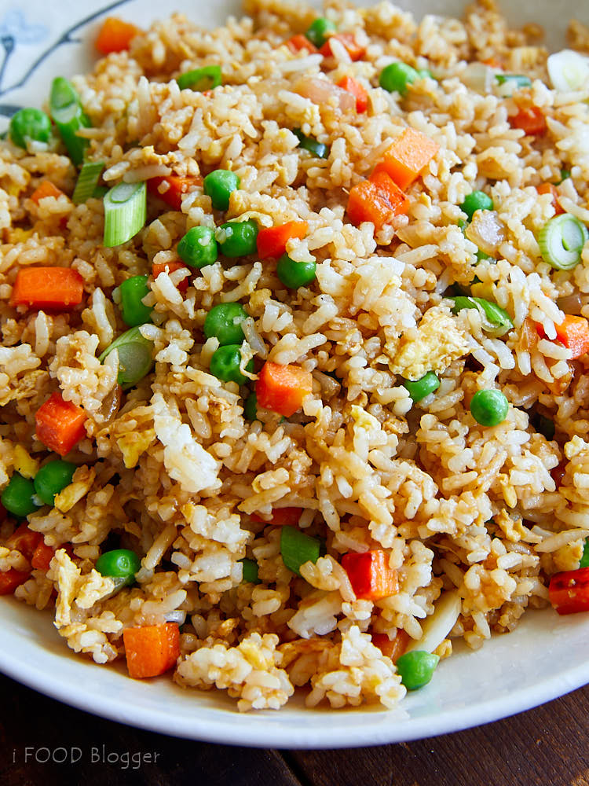

Fried Rice

Description
Ever wonder how to make the same savory fried rice you get from Japanese Habachi-
style restaurants? Well look no further! Here, we will list everything you need
to make the best habachi-style fried rice. Flat-top grill not included, though
not absolutely necessary either.
Ingredients
- 3 Cups of White or Brown rice of your choice. We used jasmine here.
- 1/2 lb Carrots
- 4 Shoots of Scallions
- 1 Cup of Peas
- 2 Sweet Onions
- 1 Clove of Garlic
- 2 Eggs
- 1/2 Cup of Sake
- 1/2 Cup of Soy Sauce
- 5 Tbs of Butter
- Salt
- Pepper
Steps
- Make up the 3 Cups of Rice the day before the rest for stickier rice.
- Dice up the carrots, scallions, onions, and garlic and keep separate.
- Put 1 Tbs into a medium sautee pan at medium heat.
- Throw in the carrots first, followed by the onions and peas.
- When onions begin to caramalize, add in the scallions.
- Add a smidge of salt and pepper.
- Once the onions are beginning to brown: add the garlic.
- Keep the pan on for another 30-60 seconds and then remove from heat.
- Now, bring out a large frying pan or wok and raise to medium-high heat.
- Add 1 Tbs of butter, followed by the rice from before.
- After rice is up to heat, add your sauteed veggies.
- Add your 2 eggs.
- Now add your 1/2 Cup of Sake and 1/2 Cup of Soy Sauce.
- Mix well and add salt/pepper to taste.
- If you need it, add more soy sauce or sake.
- Finally, enjoy!